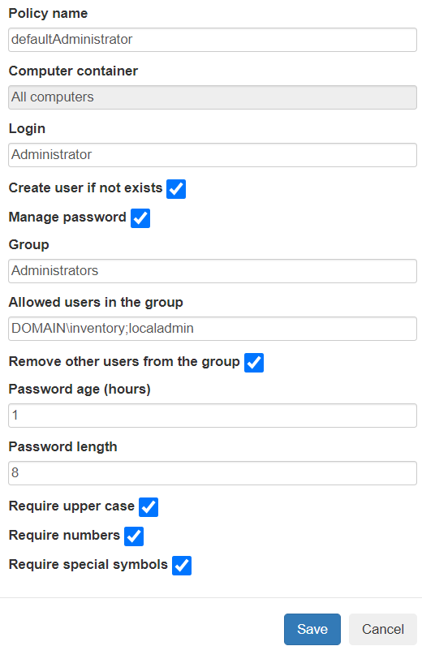
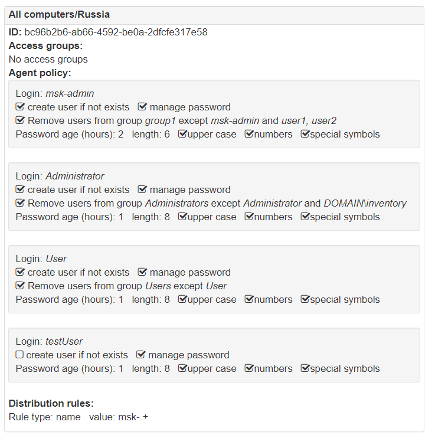
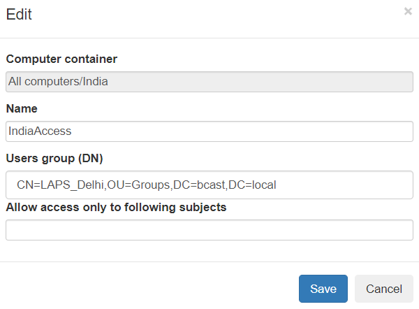
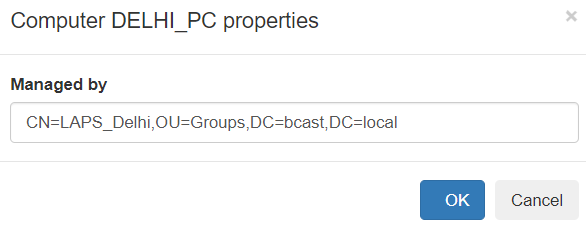

WebLAPS agent¶
WebLAPS agent is used to manage passwords of local users and control membership in local groups. It could be run on joined or non domain joined computers.
WebLAPS agent installation¶
Before you begin make sure that MS .NET Framework 4.5.1 is installed.
You can install WebLAPS agent using command line:
msiexec /i WebLAPSInstaller.msi /quiet /norestart SERVERURL=<serverulr> JOINKEY=<joinkey>
| Parameter | Example | Description |
|---|---|---|
| SERVERURL | https://weblapspublic.host;https://weblapsprivate.host | WebLAPS server URL. You can set multiple URLs delimmited with “;” in case if you want to perform password rotation on remote computers outside of corporate network. WebLAPS agent will try to select first available server. If you use reversproxy you can publish URLs used by agent with mask /api/computers/remote/* so no other functionality will be available from internet. |
| JOINKEY | superSECRETkey1 | key validated once by WebLAPS during initial connection. |
| NOSSLCHECK | 1 | disable server certificate validation |
| GROUPID | bc96b2b6-ab66-4592-be0a-2dfcfe317e58 | You can manually set computer container ID which will be used by agent to get policy otherwise distribution rules will be used to determine container |
WebLAPS agent policy¶
Go to Administration -> Computers -> Policies and select computer container, next press “Add new” button. You can configure multiple policies which will be applied to the same computer container. Policies are inherited from all parent containers.
WebLAPS agent policy is applied to specified local user account. WebLAPS agent can automatically create managed user if it is not exists. For automatic password rotation please select Manage password checkbox and set “Password age”. You can automatically remove all users from defined group except approved. You can specify multiple approved users delimited with “;”. For domain user use following format: domain\login.
To view result settings for a container go to Administration -> Computers -> Container Details and select a computer container.
WebLAPS agent access management¶
Go to Administration->Computers -> Access Groups and setup user group to computer container mappings. You must use distinguished names of groups. Members of group will be able to get passwords managed by WebLAPS agent in the container and sub containers. If you have multiple policies for several managed users per one container you can additionally restrict managed .users to which passwords you provide access by filling Allow access only to following subjects parameter.
Additionally you can provide access only for particular computer to an user or a group (group nesting is not supported) by editing computer object. This mechanism does not connected with access control subsystem based on groups and containers
